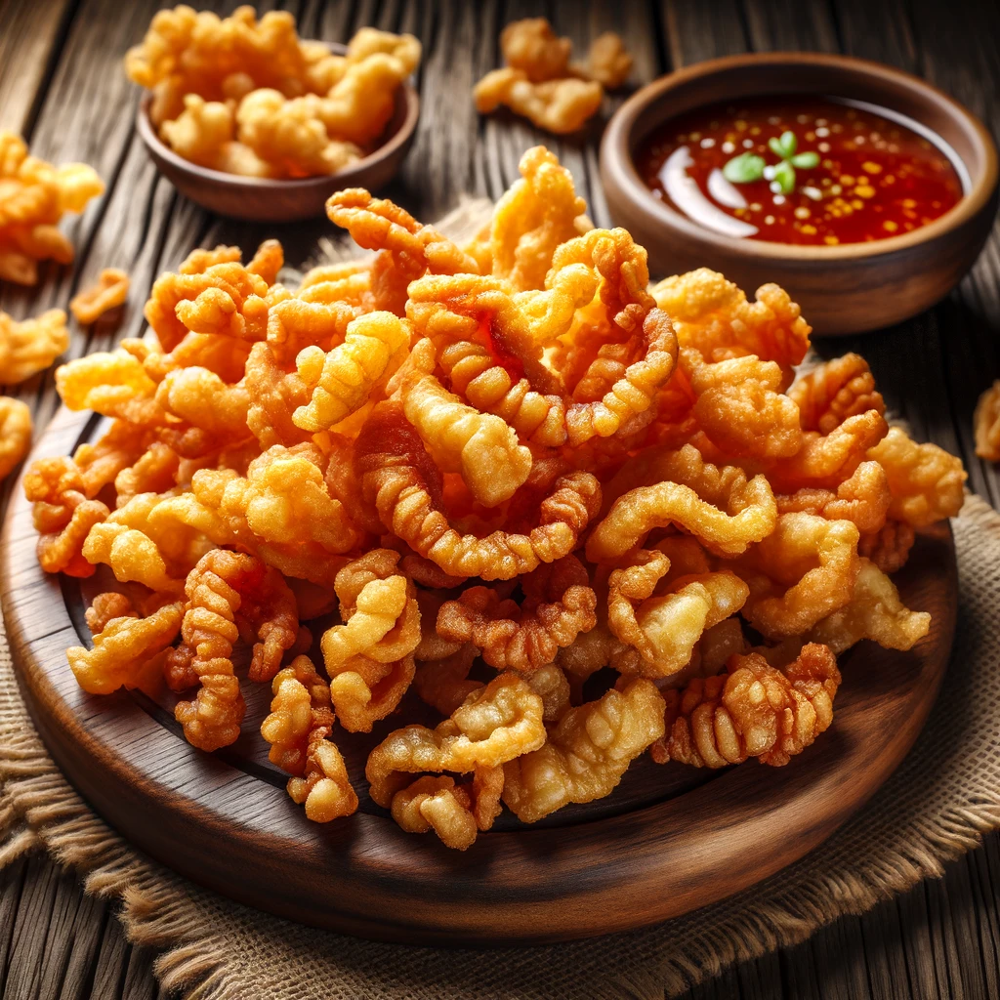

Chicken Skin Chicharrones Recipe
Description
Chicken Skin Chicharrones are a delightful and crispy snack that combines the rich flavors of chicken skin with the crunchiness of traditional chicharrones.
These golden-brown delicacies are a perfect appetizer or snack, offering a satisfying texture and taste that pairs wonderfully with a variety of dipping sauces.
Whether you're enjoying them on their own or as a side to your favorite dish, chicken skin chicharrones are sure to be a hit for their unique flavor and irresistible crunch.
Ingredients
- Chicken skins (from about 4-5 chicken thighs or breasts)
- Salt, to taste
- Ground black pepper, to taste
- Optional spices: paprika, garlic powder, or your choice of seasoning
- Oil for frying (if not baking)
Steps
- Preheat your oven to 375°F (190°C) if baking. Alternatively, heat oil in a deep fryer or large pan for frying.
- Clean the chicken skins and pat them dry with paper towels. Remove any excess fat.
- Season the skins on both sides with salt, pepper, and any optional spices you like.
- For baking: Lay the skins flat on a baking sheet lined with parchment paper. Place another piece of parchment paper on top of the skins, then another baking sheet on top to keep them flat while baking.
- Bake in the preheated oven for 25-30 minutes or until crispy and golden brown. For frying: Fry in batches in the hot oil until crispy and golden brown, about 5-7 minutes.
- Remove the skins from the oven or oil and drain on paper towels to remove excess oil.
- Serve your chicken skin chicharrones hot, with your choice of dipping sauce on the side.